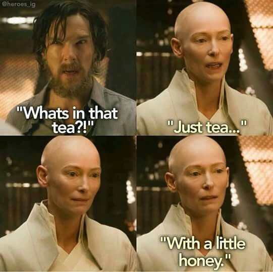
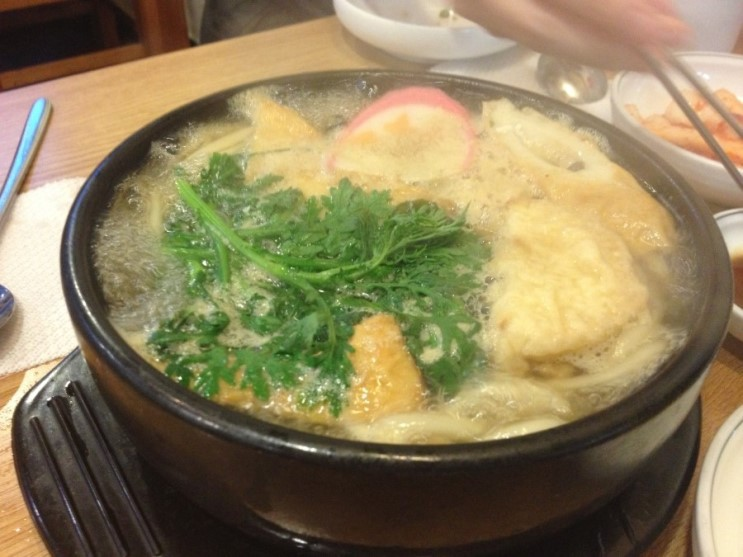
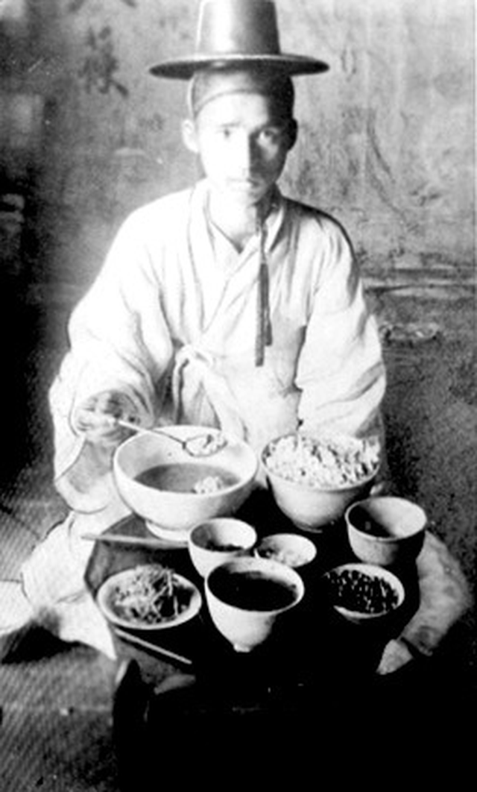
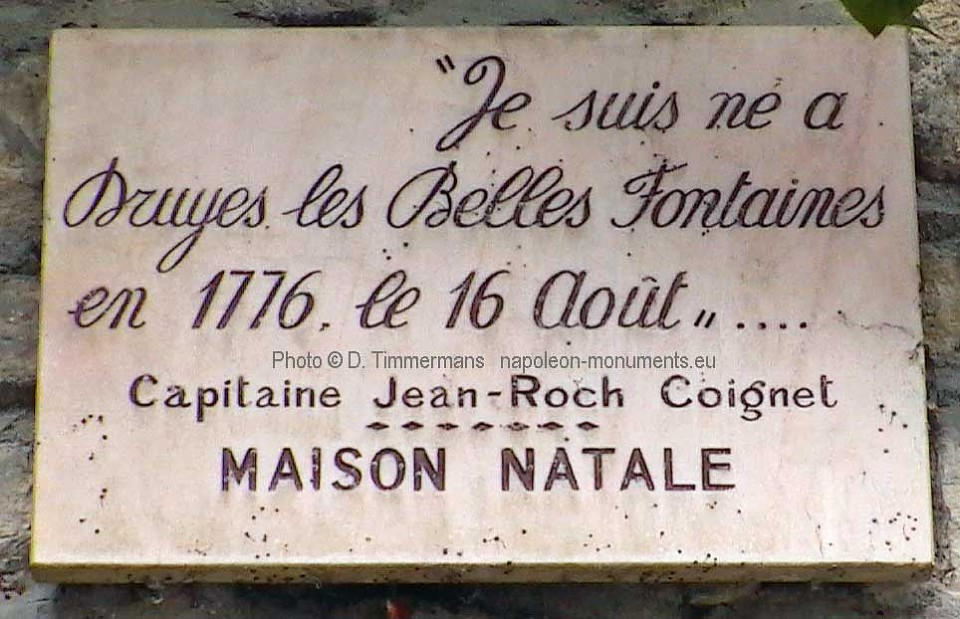
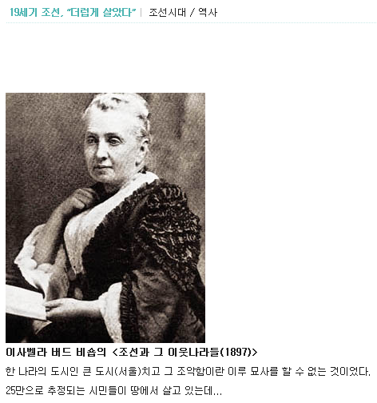
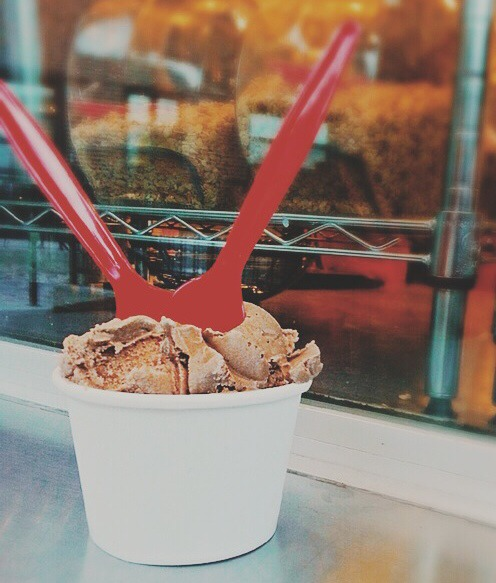

외국인들이 혐오하는 한국 식습관 - 과연 그들의 과거는 ?
게시: 2018-05-24T06:00:00+09:00
한국인들과 처음 식사하는 서양인들은 흠칫 놀라는 경우가 많다고 합니다. 우리로서는 기분 나쁜 이야기지만, 일단 후루룩 쩝쩝 소리를 내면서 먹는 것에 대해 굉장히 놀라고, 또 일부 음식은 한 그릇에 든 국물이나 반찬을 여러 사람이 침이 묻은 숫가락으로 아무렇지도 않게 같이 먹는 것에 난감해 합니다. 기본적으로 한국 사람들의 식사 예절은 구역질난다 라고 말하는 서양인들도 있고, 왜 남의 문화에 대해 함부로 평가하느냐 라며 변호해주는 서양인들도 있습니다.
서양인들은 우리나라 사람들에 비해 특히 음식 먹을 때 소리를 내지 않고 먹는 것에 대해 굉장히 예민합니다. 전에 국내 기업체의 상무님, 그리고 외국 기업체의 외국인 이사님과 함께 뜨거운 녹차를 마실 일이 있었는데, 한국인 상무님은 후루룩 소리를 내는 것에 비해, 정말 그 외국인 이사님은 소리를 안 내시더라고요.

(영화 닥터 스트레인지에서도 스트레인지와 에인션트 원이 처음 만나 차를 마시는 장면에서, 에인션트 원이 차를 마실 때 아주 살짝 후루릅 소리가 나긴 하더군요. 그럼 그렇지 어떻게 사람이 뜨거운 차를 마시면서 소리가 전혀 안 날 수가...)
또 한번은 여러명의 다국적 외국인 엔지니어들과 돈까스집에서 식사를 한 적이 있었습니다. 이때 독일인 하나와 캐나다인 하나가 각각 돌냄비 우동을 시켰는데, 저도 같은 것을 시켜 놓고 "뜨거운 우동을 먹을 때는 지들도 별 수 없겠지" 라고 속으로 쟤들이 우동 가락을 흡입할 때 소리를 내나 안 내나 유심히 관찰했지요. 놀랍게도, 정말 그 둘 모두 소리를 안 내고 먹더라구요. 감탄했었어요. 저는 어땠냐고요 ? 저는 그런 재주가 없는지라, 국수를 먹을 때는 slurping sound를 내도 예의에 어긋나는 것이 아니라는 동양식 예절에 대해 일장 연설을 늘어놓고 그냥 후루룩 소리를 내면서 먹었지요.

(그 독일 사람과 캐나다 사람은 이렇게 펄펄 끓는 우동을 정말 후루룩 소리 안 내고 먹더라고요 글쎄)
원래 우리나라 식사 예절에서도 쩝쩝거리며 음식을 먹는 것은 굉장히 예의에 어긋나는 행동입니다. 우리나라는 양반 계급이 일제 시대를 거치면서 다 망했기 때문에 (사실 망해도 싸긴 합니다) 그런 좋은 예절이 전해지지 못한 것이지요. 그러나 최근에서야 안 내용인데, 여럿이서 한 그릇에 든 국물을 숟가락으로 떠먹는 것도 과거 양반가에서는 상상도 할 수 없었던 일이라고 하네요. 양반가에서는 한그릇은 고사하고, 한상에서 여럿이 먹는 일도 없었다고 합니다. 모든 개인이 각자 작은 개다리소반을 하나씩 차지하고 각자 반찬그릇도 다 따로 받아서 먹었답니다. 이 역시, 일제 시대를 거치면서 없어진 풍습이 된 모양입니다.

(이 사진은 주로 "조선인은 대식가였다" 라는 주제로 많이 보여지는 사진입니다만, 사실 여기서 주목할 것은 저 1인상 체제...)
먼 조선시대에야 어쨌건, 최근까지만 해도 특히 집에서는 찌개 같은 것은 한그릇에 담긴 것을 여러 명의 입에 들어갔던 숟가락들이 들락거리며 퍼먹는 것이 일반적이었습니다. 작은 한식집에 가면 그런 경우가 또 많았지요. 요즘은 그런 식당들이 많이 없어진 것 같습니다. 일반 가정에서도 이제는 각자 작은 그릇에 국자로 덜어 먹는 경우가 많지요. 사실 한 그릇에 여러 명의 숟가락이 들어가는 것은 정말 비위생적인데다가, 뭔가 불쾌한 일이쟎아요.
그런데, 서양인들은 원래부터 그렇게 깨끗하게 살았을까요 ? 그게 그렇지가 않았던 모양입니다.
다음에 인용한 회고록을 쓴 쿠아녜(Coignet)라는 사람은 파란만장한 경력의 소유자로, 나중에 나폴레옹의 근위대에 들어가서 그야말로 산전수전을 다 겪고 틸지트 조약에서 나폴레옹과 러시아 짜르의 회담을 직접 지켜보기도 합니다. 1812년 러시아 원정 때도 당연히 함께 했고, 이 원정 끝무렵 대위로 승진했지요. 나중에 고향인 옥세르(Auxerre)에서 담배 가게를 하던 이 양반은 무려 1865년, 즉 89세까지 살았는데 1853년에야 최초로 이 회고록을 썼다고 합니다. 다만 이 양반은 아주 늦은 나이에야 글을 배운 덕에, 회고록 문체가 아주 엉망이어서, 딱 500부만 인쇄하여 자기 담배가게 손님들에게만 팔았던 이 책은 그다지 잘 팔린 편은 아니었답니다.

----------- 척탄병 쿠아녜의 회고록 ------------
(마렝고 전투에서 적의 대포를 혼자서 탈취하는 공을 세운 바 있는 병사 쿠아녜는, 그런 연줄을 이용하여 결국 나폴레옹의 근위대에 뽑히게 됩니다. 그는 일반 전열병 연대에서는 키가 큰 축에 속하여 척탄병으로 복무했으나, 근위대에 들어오니 사정이 매우 달랐습니다.)
특무상사는 내가 새로 배치된 내무반 방으로 날 데려가 새로운 동료들에게 나를 소개했다. 그 척탄병들 중 하나는 키가 6피트 4인치 (영국식으로 1인치=2.54cm라면 약 192cm이고, 프랑스식으로 1인치=2.71cm라면 거의 2m4cm)나 되는 쾌활한 친구였는데, 내가 키가 얼마나 작은지 보고는 웃음을 터뜨렸다.
특무상사는 그에게 말했다. "자, 여기 있는 친구가 자네의 잠자리 친구라네."
"이런 꼬마 친구라면 내 코트 밑에 숨겨가지고 다닐 수도 있겠는데요?" 난 이 농담에 웃었다.
저녁 식사가 준비되었는데, 여기서는 다른 부대처럼 한 접시에서 나눠 먹는 것이 아니라, 각 병사들이 개인 전용의 수프 그릇을 가지고 있었다.
난 상병에게 10프랑 (약 10만원)을 주었고, 다들 이에 만족해 하는 것 같았다. 상병은 이렇게 말했다. "내일 동료와 함께 너도 수프 그릇을 사러 외출하도록 해."
그 말대로 우리는 내 수프 그릇을 사러 나갔고, 같이 나온 동료에게 난 맥주 2병을 쏘았다. 병영으로 돌아와서는 정오의 점호 때까지 외출할 수 있는 허가를 요청했는데, 상병은 "얼른 갔다와" 라며 허락해 주었다.
---------------------------------------------------
이 글을 보면 당시 프랑스 군대의 병영 문화를 약간 엿볼 수 있습니다. 현대적인 관점에서는 이해가 잘 가지 않는 대목들도 많습니다. 가령 왜 내무반장격인 상병에게 돈을 상납해야 했으며, 또 다른 동료 병사들은 왜 그런 것을 좋은 시선으로 바라보았는지 좀 이상하지요. 여기서 인상적인 부분은 개인용 수프 그릇 이야기입니다. 즉, 당시 일반 부대 병사들은 그냥 커다란 그릇 하나에 수프를 담아 놓고 여럿이서 숟가락으로 퍼먹었다는 이야기거든요.
서양 사람들도 예전에는 여럿이서 같은 그릇에 든 음식을 먹었다는 사례는 또 있습니다.
제가 어릴 때 TV에서 본 월트 디즈니 영화 중에 그런 장면이 있었어요. 배경이 18세기 스코틀랜드였는데, 삼촌네 집에 어떤 젊은이가 먼 곳에서 저녁 늦게 방문하는 장면이었습니다. 젊은이가 저녁을 안 먹었다고 하자, 마침 귀리죽 같은 것을 먹고 있던 음험한 구두쇠 삼촌은 그냥 자기가 먹던 죽 그릇과 스푼을 그대로 젊은이에게 내주며 먹으라고 합니다. 그러다가 이 젊은이가 별로 먹지를 않자, 이 삼촌은 '다 먹었으면 내가 마저 먹겠다, 비켜라' 라며 젊은이를 밀쳐내는 장면이었지요. 그때 어린 저도 '어, 서양인들도 저렇게 먹던 죽그릇과 스푼 그대로 다른 사람이 먹나 ?' 라며 의아하게 생각했었습니다.
(제가 본 TV 영화도 이것이 맞습니다. 저 주인공 얼굴이 기억나네요.)
Kidnapped by Robert Louis Stevenson (배경 : 18세기 중반 스코틀랜드) -----------
"배 고프냐 ?" 그는 내 무릎 정도를 쳐다보며 물었다. "너 이 죽 먹을래 ?"
난 그게 삼촌이 드실 저녁 아니냐고 물었다.
"아" 그는 말했다. "난 그거 안 먹어도 돼. 난 에일 맥주를 마시지 뭐. 그게 내 기침을 좀 다독여주거든."
그는 여전히 한눈은 내게 고정시킨 채 컵에 든 맥주를 반쯤 마시더니 갑자기 손을 내밀었다.
"그 편지 좀 보자꾸나."
(...중략...)
"쯧쯧 !" 에브니저 삼촌이 말했다. "놀랄 일이구먼. 그건 확실하네. 그리고 데이비, 얘야, 너 그 죽 다 먹은 거면 내가 마저 먹으마, 자."
에브니저 삼촌은 나를 의자와 스푼에서 밀어내자마자 죽을 먹기 시작했다.
---------------------------------
위에서 보시다시피, 최근에 우연히 알았는데 그 영화는 '보물섬'의 작가인 로버트 스티븐슨 (Robert Louis Stevenson)의 소설 '납치' (Kidnapped)를 영화화한 것이었습니다. 그리고 그 영화를 본 다른 서양인들도 동일하게 그 장면이 역겹다고 생각한 모양이에요. "Health Biographies of Alexander Leeper, Robert Louis Stevenson & Fanny Stevenson" 라는 책에도 그 장면이 언급되더군요. 당시 스코틀랜드에서는 그렇게 남이 먹던 죽을 먹는 것이 과히 이상한 행동이 아니었다는 것이지요.
저도 몇번 소개드린 바 있습니다만, 만쭈리님이 연재하시다 지금은 중단하신 굉장히 재미있는 블로그 (http://blog.naver.com/alsn76) 가 있습니다. (내용에 대해서는 우리나라 역사를 왜곡 비하한다고 해서 비난하는 분들도 있는 것 같습니다만...) 몇 년 전부터 연재가 중단되어 아쉽습니다만, 여기서도 보면 대략 이런 이야기가 나옵니다.
"19세기말 한국을 찾은 서양인들은 하나 같이 조선은 온통 똥천지이고 불결하기 짝이 없다 라고 묘사했다. 그러나 신기한 것은 18세기에 한국을 방문한 서양인들, 가령 하멜 같은 사람들에게서는 조선이 더럽고 불결하다고 묘사한 경우가 없다. 조선 사람들의 위생관념이 100년 동안 크게 후퇴한 것일까 ? 아니다. 18세기에는 유럽도 조선과 마찬가지로 온 동네가 똥천지였던 것이다. 불과 100년 사이에 유럽이 깨끗해진 것이고, 사람의 기억과 습관은 100년 사이에 크게 변하는 것이다."

제가 어릴 때는 여럿이서 한 그릇에 든 찌개를 각자의 침이 묻은 숟가락으로 떠먹는 것이 별로 이상하지 않았는데, 지금은 저도 직장 동료들과 한 그릇에서 찌개를 먹는 것이 상당히 꺼림직합니다. 심지어 집에서도 찌개 등을 각자의 작은 그릇에 국자로 덜어먹습니다. 그런 것을 보면 100년은 커녕 10년 사이에도 습관과 풍습은 많이 변하는 모양입니다.
지금도 한 가족이나 연인끼리는 그렇게 같은 그릇에 여럿이 숟가락을 들이밀기도 합니다. 가장 대표적인 경우가 팥빙수지요. 다만 같은 직장 동료끼리는 차마... 그러지 못하겠더라고요. 그렇다면 서양인들은 어떨까요 ? 가령 한 가족끼리는 다른 식구가 먹던 아이스크림을 다른 사람이 먹기도 할까요 ? 먹는 모양입니다.

제가 애청하던 미드인 '닥터 하우스'에 이런 장면이 나옵니다. 동유럽계 여자인 도미니카라는 미녀가 시민권을 따기 위해 하우스와 위장 결혼 생활을 하는데, 그만 그 위장 사실이 이민국 관리에게 발각되어 하우스는 처벌을, 도미니카는 추방을 당할 위기에 처합니다. 이때 도미니카가 하우스를 정말로 사랑하는 척 기발한 눈물 연기를 보여주며 이민국 관리를 감동시키자, 이 관리는 일단 추방 결정을 유보하며 '다음번에 너희들 가정을 다시 불시 방문하겠다, 그때는 너희들이 스푼 1개로 아이스크림을 나눠먹고 있어야 할 거다' 라고 말하더군요. 하긴, 키스도 하는 사이에 스푼을 나눠쓰지 못할 이유는 없겠지요.
(미드 '하우스'에서의 해당 장면입니다.)